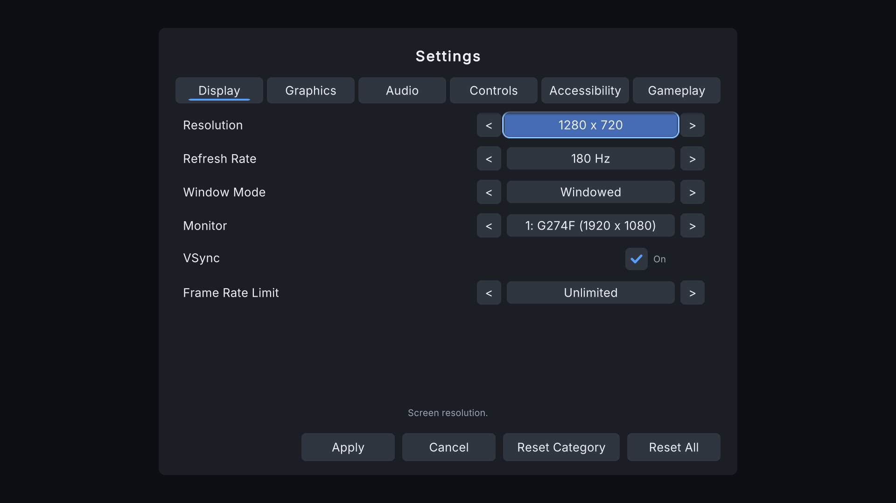

Quick Start
Your first working menu in about five minutes. You need Unity 6000.0 or newer. TextMesh Pro's Essential Resources must be in the project (Unity offers to import them the first time a text appears; you can also use Window > TextMeshPro > Import TMP Essential Resources).
1. Open the kit window #
Tools > All In One Game Settings & Menu Kit > Open Window. It opens on the Home tab. (A short welcome window also appears once after import; you can turn it off.)
2. Follow the four Quick Start buttons #
Each step turns into a green check mark when it is done.
- Copy profile. Copies the kit's settings profile to
Assets/AllInOneGameSettingsMenuData, so your edits never touch the kit's own files (updates stay safe). - Create and assign. Creates a starter Audio Mixer (Master, Music, SFX, Voice, UI) and connects the volume sliders to it. Route your AudioSources to its groups. Master Volume works even without a mixer.
- Create front end. Adds the menu prefab to the open scene, plus an EventSystem if the scene has none. One Ctrl+Z undoes it.
- Add Menu Scene Mode. Marks this scene as your menu scene. In your level scenes, add a Menu Scene Mode set to Gameplay: there, Esc or Start opens the pause menu.
3. Press Play #
- Any key leaves the title screen.
- Open Settings, change something and press Apply. Changes are saved and come back the next time you play.
- Display changes ask "Keep these display settings?" and undo themselves after 15 seconds if you don't confirm.

4. Connect your game #
- New Game raises
MenuRoot.onNewGame: in the Inspector of the front end, add your scene-loading method there (or set New Game Scene to load a scene with a loading screen). - Continue and Load Game raise their own events; tell the menu whether a save exists with
MenuRoot.Instance.SetHasSave(true). - Want a different look? Theme tab > Use on Tactical or Storybook.
The guided tour #
On the Home tab, Next walks through the other tabs in six short steps: Setup, Theme, Settings, Check and About.
Next #
- Samples show the kit in a puzzle, a first-person and a cozy adventure game.
- Settings catalog explains how settings reach your game.